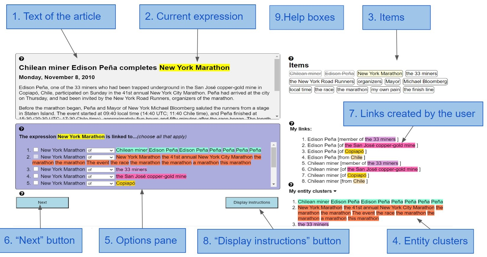
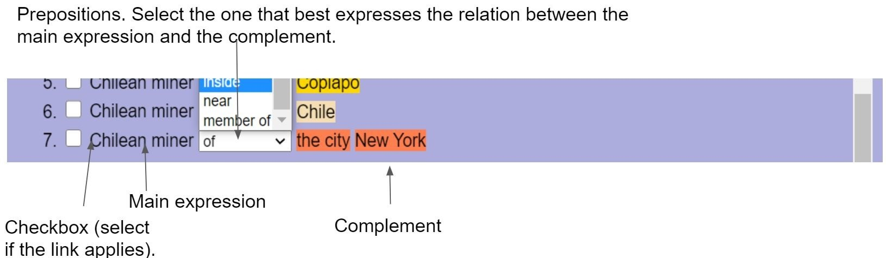
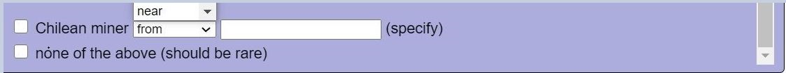

Your task is to find and mark all relations (links) between entities in the text.
Some links are explicit: in "the ceiling of the room" there is a clear link "of" between "the ceiling" and "the room".
Other links are implicit, and are harder to track. For example, in "I entered the room. The ceiling was high" there is an implicit link "of" between "the ceiling" and "the room", even though the phrase "the ceiling of the room" is not explicitly written. Such implicit links are called "bridging".
Let's learn how to identify both explicit and implicit links between entities.
1. Bridging is an implicit relation between two nouns in the text. Even though this relation is not expressed explicitly, humans can reconstruct it intuitively as they read. For example:
|
(1) I entered the room. The ceiling was high. |
✔ |
In (1) the relation between the ceiling and the room is not explicitly mentioned in the text. However, we understand that the ceiling refers to the ceiling [of the room]
.
The word room here is the complement of the word ceiling . Without the complement the word ceiling feels incomplete (because a ceiling does not exist on its own; it has to be a part of some room).
We can make these relations explicit using prepositions (of, in, for etc.). The resulting sentence will look like this:
|
(2) I entered the room. The ceiling [of the room] was high. |
✔ |
Click here to see more examples of bridging
1. The manuscript described a new system for classifying plants. When Gronovius saw it, he was very impressed, and offered to help pay for the printing.
Resulting expression: printing [of the manuscript]
2. The Ingleton branch line was a rural railway line in the West Riding of Yorkshire, Lancashire and Westmorland in England (now North Yorkshire, Lancashire and Cumbria). It was originally planned in 1846 to form part of a main line route from London to Scotland, but fell victim to rivalry between railway companies. Completion was delayed until 1861, and it was only ever a rural branch line, serving the towns of Ingleton, Kirkby Lonsdale and Sedbergh. It closed to passengers in 1954 and was dismantled in 1967.
Resulting expression: completion [of the Ingleton branch line] or: completion [of the line]
3. Linnaeus quickly discovered the specimen was a fake cobbled together from the jaws and paws of weasels and the skins of snakes.
Resulting expression: jaws [of weasels]
2. However, often links between nouns are explicit.
|
(3)The police located the vehicle's engine in an alley a few days later. |
✔ |
The sentence explicitly states which engine it is talking about (the engine [of the vehicle]). We will be looking for such explicit links too. Here the complement of engine is the vehicle.
Everything we say below applies both to implicit links (bridging) and to explicit links.
Some terminology
As you see, when we use a preposition to express relations between two expressions,
For example, in (2) "the ceiling" would be the main expression and "room" would be its complement.
3. Sometimes we can find multiple complements for the main expression. For example:
|
(4) I spent a wonderful weekend in Paris. I walked through its streets and enjoyed the view. |
✔ |
Here both "the views [of Paris]" and "the views [of the streets]" would be correct.
In this task you should try your best to find as many valid complements for each expression as possible. For details on selecting multiple complements see section "When And How to Select Multiple Complements?" below.
3. We are looking for links between two different entities. Therefore the expression and its complement are related but do not refer to the same thing! Consider the following example:
|
(5) The car was stolen. Fortunately, the police located the vehicle within seconds. |
✘ |
The words car and vehicle refer to the same entity. This is not a relation between two different entities, so these two expressions should not be linked.
1. Triple Trouble is a 1950 comedy film directed by Jean Yarbrough and starring The Bowery Boys. The film was released on August 13, 1950 by Monogram Pictures.
"Triple Trouble" and "film" refer to the same entity and therefore should not be linked.
2. The memoir's author uses the pseudonym Humbert Humbert to refer to himself in the manuscript. Humbert begins the memoir with his Parisian childhood and ends it with his incarceration.
"Author" and "Humbert" refer to the same person and therefore should not be linked.
3. Voice cloning is a deep-learning algorithm that takes in voice recordings of an individual and is able to synthesize a voice is very similar to the original voice. Similar to deepfakes, there are numerous apps, such as LyreBird, iSpeech, and CereVoice Me, that gives the public access to such technology.
"Voice cloning" and "technology" refer to the same entity and therefore should not be linked.
4. Complements can appear not only before, but also after the main expression. For example:
|
(6) M. Pagnol could not find any birth certificate in the Jersey archives. He therefore concluded that James was not born on the island, and that he did not belong to the Carteret family. |
✔ |
Resulting expression: birth certificate [of James]
Click here to see more examples of complements that appear after the main expression
1. As the idea of institutional care gained acceptance, formal rules appeared about how to place children into families.
Resulting expression: care [for children]
2. A personal name is the set of names by which an individual is known.
Complete expression: name [of an individual]
3. Sleep has a complex, and as of yet not fully elucidated, relationship with mood. Most commonly if a person is sleep deprived he/she will become more irritable, angry, more prone to stress, and less energized throughout the day.
Complete expression: sleep [of a person]
5. Sometimes complements appear in a different sentence, or even paragraph, than the main expresion. For example:
|
(7) Prior to forming his own Madison-based company in 1985, John was a producer at CBS and ABC in Chicago for six years. His credits include six Chicago Emmys, a National Iris Award for Best Television Special and a national CableACE nomination. He received the Peter Lisagor Award for Special News Production, plus recognition from the Organization of American Women in TV and Radio for his documentary work. |
✔ |
Resulting expression: accolades [for John]
Click here to see more examples of complements in other paragraphs
1. Maldives is a presidential republic, with extensive influence of the president as head of government and head of state. The president heads the executive branch, acts at the same time as minister of defence and appoints the cabinet which is approved by the People's Majlis (Parliament). He leads police, army, coast guards, fire brigade and judiciary. There is no separation of powers. The current president as of 17 November 2018 is Ibrahim Mohamed Solih. Members of the unicameral Majlis serve five-year terms, with the total number of members determined by atoll populations. At the 2014 election, 77 members were elected. The People's Majlis, located in Male, houses members from all over the country.
The republican constitution came into force in 1968, and was amended in 1970, 1972, and 1975.
Resulting expression: constitution [of Maldives]
In this task you will have to:
1. Sometimes, when you choose a complement from the text, there are two or more words that sound right. In such cases you should choose the option that is correct in this particular context. For example:
|
(8) The car[1] was stolen. The police located the engine a few days later. One week later another car[2] was stolen. |
The word "car" is mentioned here twice. Which one, do you think is the correct complement for the word engine here: car[1] or car[2]? Generally, both could apply, because an engine can be a part of any car. But in this context the engine belongs to car[1], from the first sentence, not to car[2] from the second sentence.
2. Now, let's take a very similar example, but instead of two identical words ("car") we'll use different words ("car" vs. "vehicle"). This does not change the situation!
|
(9) The car was stolen. The police located the engine a few days later. One week later another vehicle was stolen. |
Which word, do you think, is the correct complement for the word engine in this case: car, vehicle or both? Just like in the example above, in this particular context the engine belongs to the car from the first sentence, not to the vehicle from the second sentence.
3. However, if there are multiple complements and all of them sound right in this particular context, select all of them! For example:
|
(10) She was wearing a mauve dress and matching shoes. I really liked the color. |
Here the word color means both "the color [of the dress]" and "the color [of the shoes]". So we need to select both.
4. If there are several possible complements, but you are not sure which one is correct in this context, do not select any of them. For example:
|
(11) A new car and a truck were stolen last week. The police located the engine a few days later. |
From the context of this sentence it is not clear whether the engine belongs to the truck or to the car. So we should not select either of those words.
Short summary of the rules (click to open)
Now let's see what the interface looks like.

What Will You See on the Screen?The suggested links in the "Options pane" (see 5 above) are structured as follows:

You can select "member(s) of" instead of a preposition. It's at the end of the dropdown menue. You have to do so if the "main expression" refers to a set and the "complement" - to an element(s) of the same set(for example, "Chilean miner" [member(s) of "the 33 miners"]).
If you scroll all the way down the "options" you will see this:

The option with the textbox allows you to type a "complement" of your own, not found among our suggestions. It has to be a noun phrase from the text.
"None of the above" should be selected if you are sure the current expression has no links in the text.
Important notes:
Now, if you are ready, please, do a training exercise that will help you understand the task and get to know the interface even better! (This introduction will remain open in a separate tab, so that you can go back anytime and reread.)